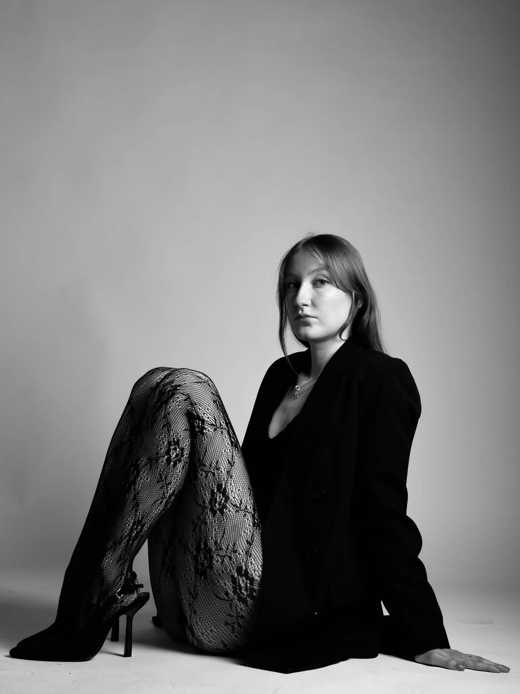
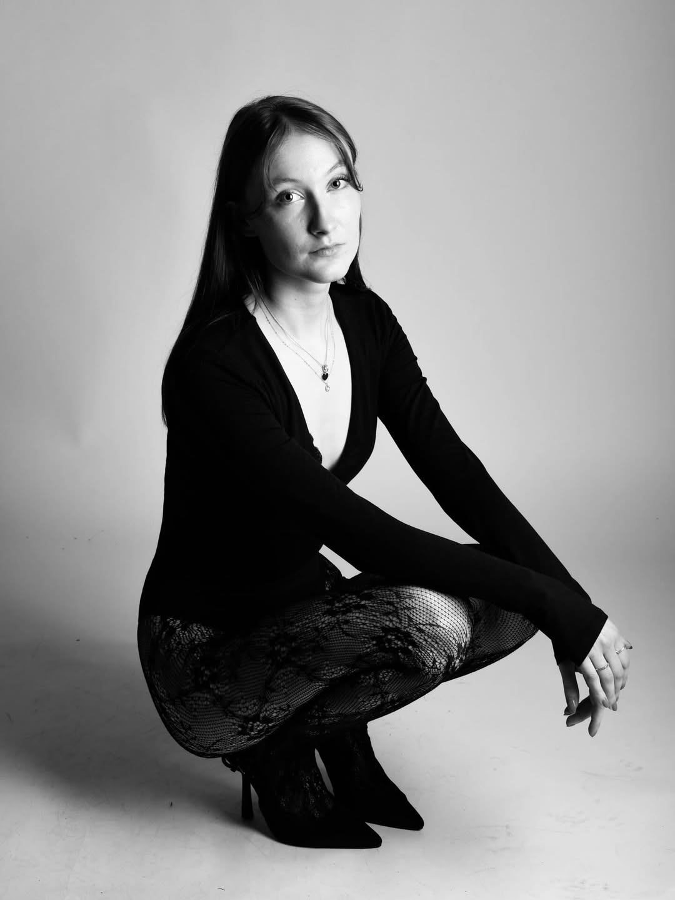
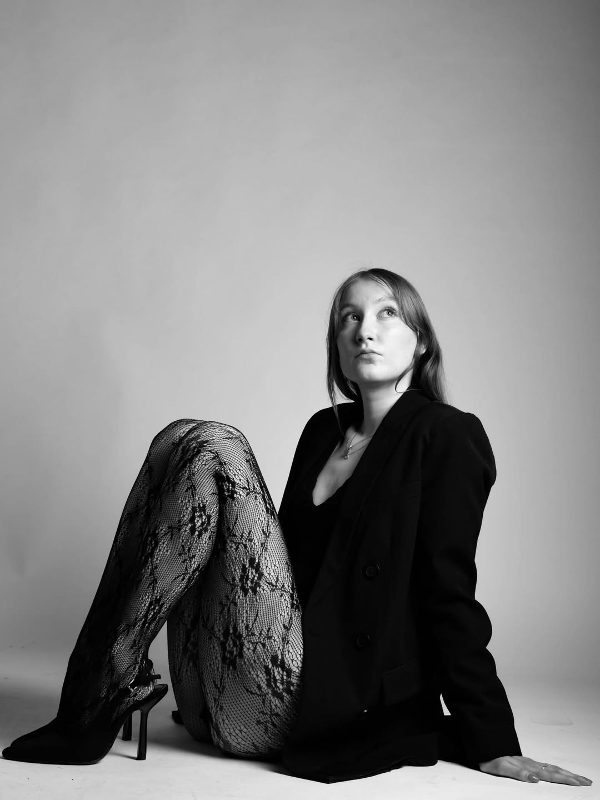

Études
Communication à la HELB
J'étudie la communication à la Haute École Libre de Bruxelles Ilya Prigogine, avec une sensibilité naturelle pour l'image, la présentation et la relation.
Je construis un parcours à la croisée de la communication, de l'administratif et de l'univers mode. Entre mes études à Bruxelles, mon expérience de secrétariat et mes défilés, cette vitrine rassemble mon profil, mon énergie et mes contacts professionnels.

Un profil polyvalent qui associe présentation, sens du contact, organisation et image.
Mon parcours se situe à la croisée de la communication, de l'administratif et du monde de la mode. Je me définis par ma polyvalence, mon sens du contact et mon souci du détail.
J'étudie la communication à la Haute École Libre de Bruxelles Ilya Prigogine, avec une sensibilité naturelle pour l'image, la présentation et la relation.
Je possède aussi une expérience de secrétaire, avec les qualités qu'on attend d'un profil fiable : organisation, écoute, discrétion et suivi.
Mon univers s'étend également au mannequinat, notamment avec un défilé pour R3WIND, marque styliste de vêtements, dans une esthétique assumée et contemporaine.
Mes expériences variées racontent toutes une même chose : une forte capacité d'adaptation, utile aussi bien en communication qu'en représentation ou en gestion.
Études en communication, avec une base solide en expression, image, relationnel et compréhension des environnements professionnels.
Une pratique tournée vers la gestion, l'organisation et l'accompagnement administratif, dans une logique de sérieux et d'efficacité.
Une expérience professionnelle qui renforce ma polyvalence et ma capacité à évoluer dans des contextes variés.
Un passage marquant dans une structure reconnue, qui ajoute une dimension humaine et engagée à mon parcours.
Participation à un défilé pour la marque R3WIND, dans une approche mode plus affirmée, éditoriale et élégante.
Une présence qui attire l'attention, un profil qui inspire confiance.
Disponible, professionnelle et adaptable, je mets cette énergie au service de projets sérieux, que ce soit en communication, en secrétariat ou dans la mode.




Que ce soit pour une opportunité en communication, un poste administratif, un projet événementiel ou une collaboration dans la mode, je peux être contactée directement.